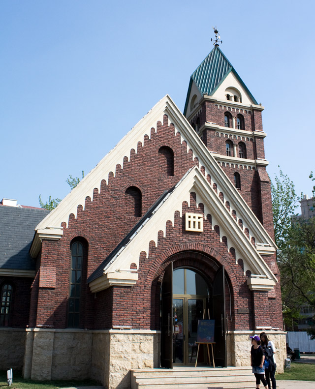
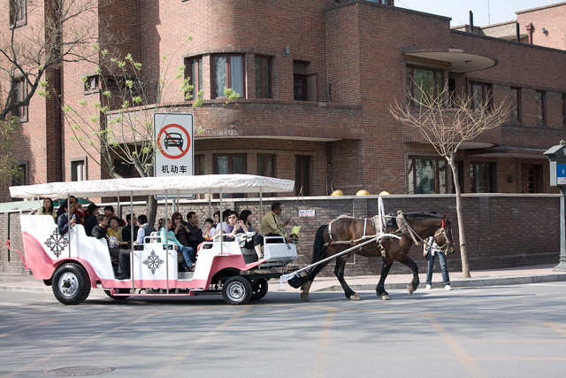
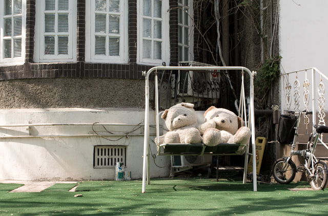
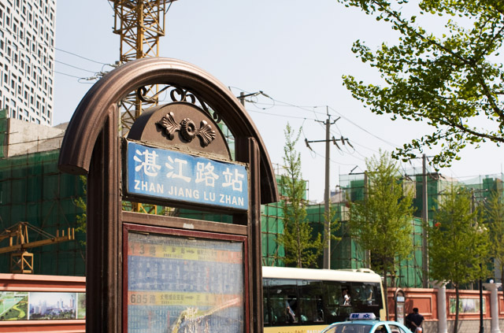
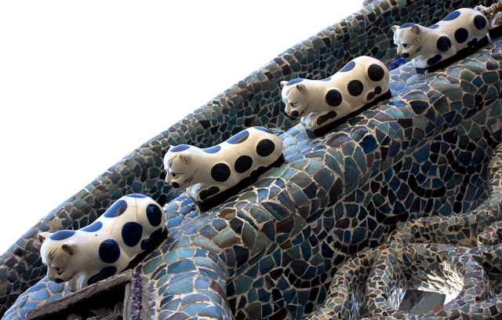

去天津，好多人都推荐要去五大道。天津以前租界时期留下了许多的小洋楼，五大道就是非常集中的一片。这个区域都是不同国家建筑风格的花园式房屋，还不乏一些名人的故居，所以被认为是天津市独具特色的万国建筑博览会。大部分的建筑都是矮栋别墅，配有小小的花园和矮矮的围墙，恰逢围墙上爬着绿色植物，或有梨花飘落的地方，就更显得幽静和休闲。我想到这些经历了半个世纪的建筑，在今日依然散发着它们的魅力和特色，展现着设计师注入其中的感情和生命力。而我们现今动辄几百万天价的房子，七十年产权，二三十年寿命，在几十年后还能留下什么？到时候也许人们可以参观一下各地的市政府大楼，公安局大楼，都挺雄伟的。
 西餐厅加艺术馆，五大道也有不少酒吧，但老外还不是太多。

路口拐角的观光车上有二十来人吧，五一劳动节还辛苦工作的马儿，有没有动物组织来为它们申请三倍草粮呢。

这个地方众多西方风情的建筑，使得这里很自然成了婚纱摄影的好地方，沿路倒是开了不少的婚纱店，摄影店。

五大道区域大部分的路都是以全国的地名命名，当我们发现竟然有湛江路的时候，不惜多走几站去找这个站牌。随后我们便从大陆南端一直走到北边的赤峰路。

走得精疲力尽才到的赤峰路，只因那里有一座瓷房子，房子墙壁都是用瓷贴满了。虽然抢眼，但我不是很喜欢整个的视觉效果，只是一些小的点缀造型还不错。比如这张照片上的几只小猫。